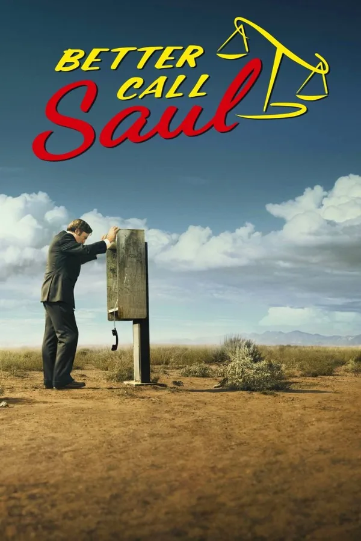
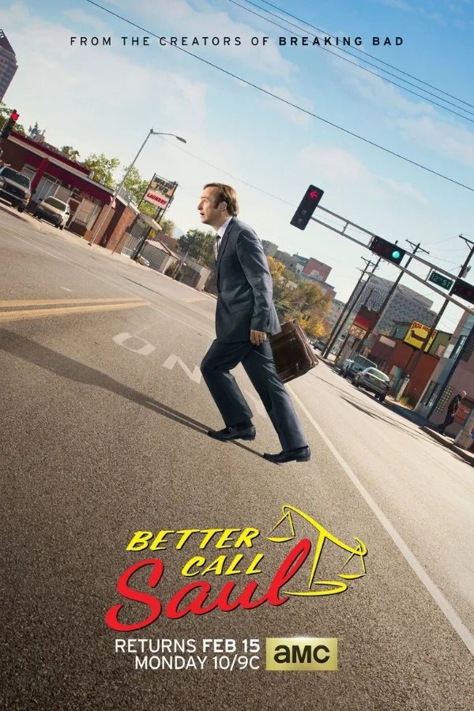
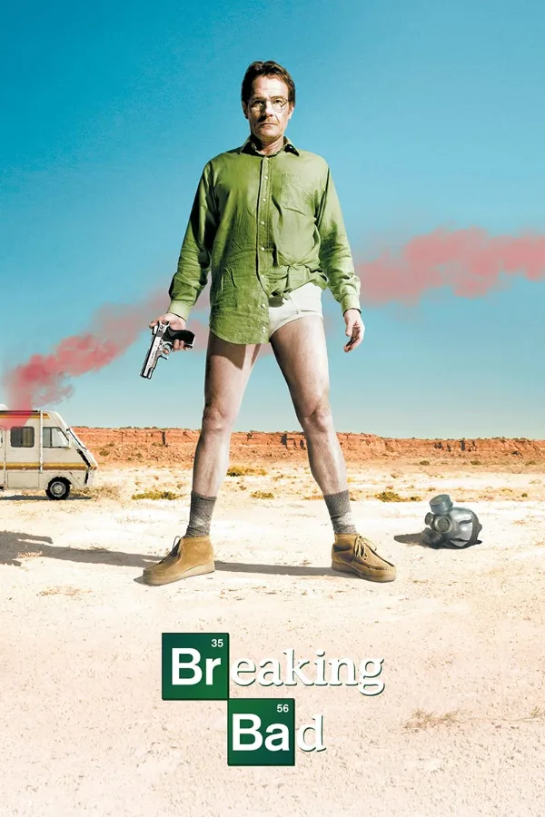
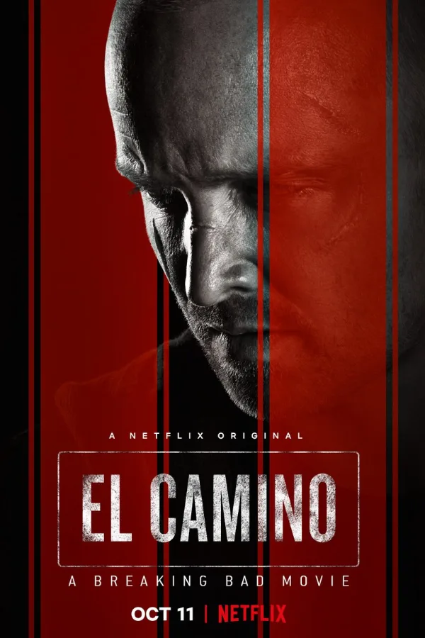

Breaking Bad in order, remembering RJ Mitte.
We lost RJ Mitte on October 12. He was 34. For a lot of us he’ll always be Walt Jr., the kid at the breakfast table who just wanted his family to be okay. His representative has confirmed that he died by suicide, and we’re heartbroken.
Remembering RJ
RJ was born in Jackson, Mississippi, in 1992 and was diagnosed with cerebral palsy when he was three. Walt Jr. had cerebral palsy too, and RJ brought his own life to the part for all five seasons. You can feel it. He never played Walt Jr. as a side note to the drama. He played him as a real kid.
Off screen he used the spotlight to make room for other people. He spoke for actors with disabilities at the Screen Actors Guild, was an ambassador for United Cerebral Palsy, ran the Mitte Foundation, and won the SAG-AFTRA Harold Russell Award in 2013.
Everyone in that house was lying to protect Walt Jr., and he was usually the first to see through it. On a rewatch, his scenes hit the hardest. If you’re going back to the series this week, here’s how we’d watch it.
The Breaking Bad universe in order

1Better Call Saul, Seasons 1–5

2Better Call Saul, Season 6, Episodes 1–9

3Breaking Bad, Seasons 1–5

4El Camino: A Breaking Bad Movie
- 5
Better Call Saul, Season 6, Episodes 10–13
Paste this into Kuvacult and you’ll get all five, in order, ready to watch with friends.
This is story order. Saul’s final season jumps around in time, which is why its last four episodes land after El Camino. Watching for the first time? Release order is great too: Breaking Bad, Better Call Saul seasons 1–5, El Camino, then Saul’s final season.
More shows to binge: The Walking Dead watch order, Avatar: The Last Airbender watch order, or every watch order.
RJ’s mother has shared that he was going through a hard time in his last few months, and that the people closest to him didn’t see this coming.
People can be hurting and still look fine. So text the friend who’s gone quiet. Ask how they’re really doing, and then actually listen. And if you’re the one who’s hurting, please tell someone. A friend, family, or 988. You’re worth the call.
“Please know you are loved, and you are not alone.”
Aaron Paul, remembering his co-star
Questions
What order should I watch Breaking Bad, Better Call Saul and El Camino in?
In story order, watch Better Call Saul seasons 1–5 and season 6 episodes 1–9, then Breaking Bad, then El Camino, then the last four episodes of Better Call Saul season 6.
Should I watch Better Call Saul before Breaking Bad?
You can. Most of Better Call Saul is set before Breaking Bad, but it was made afterwards and some scenes land harder if you already know Breaking Bad. First-time viewers often prefer release order.
When does El Camino take place?
El Camino picks up minutes after the Breaking Bad finale and follows Jesse Pinkman in the hours and days after.
Rest easy, RJ. Thank you for Walt Jr. 1992–2026.